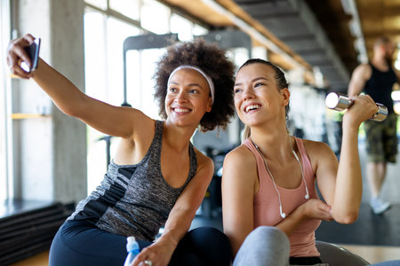
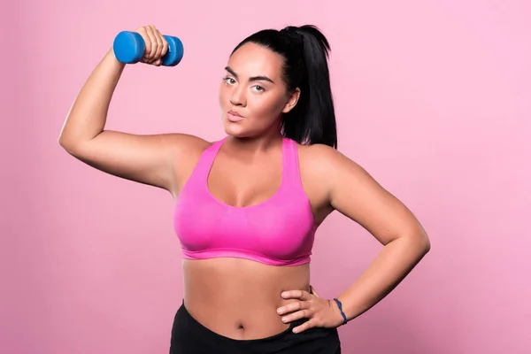
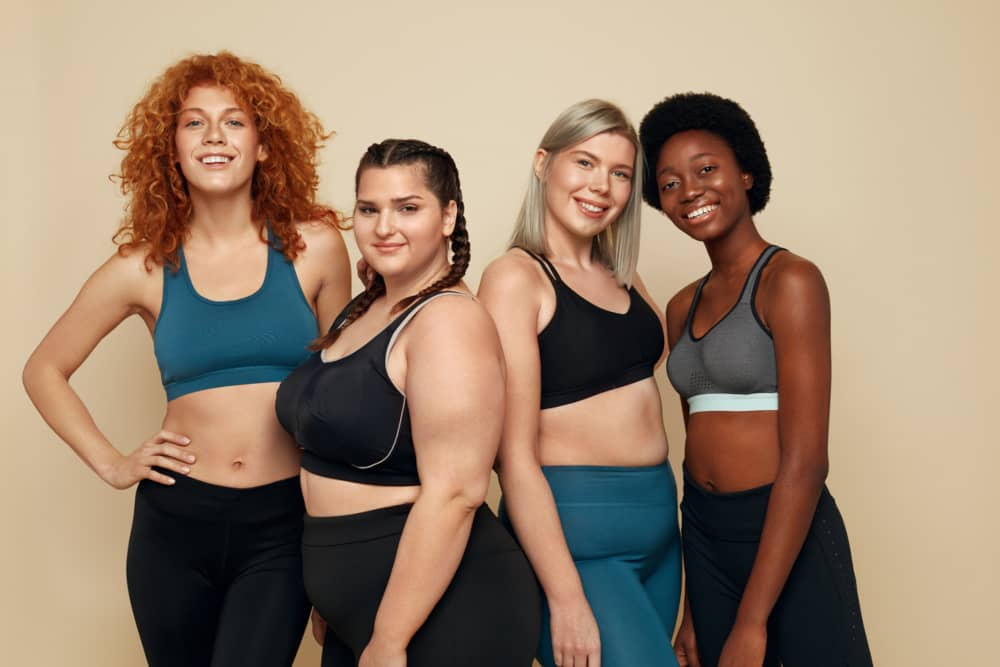
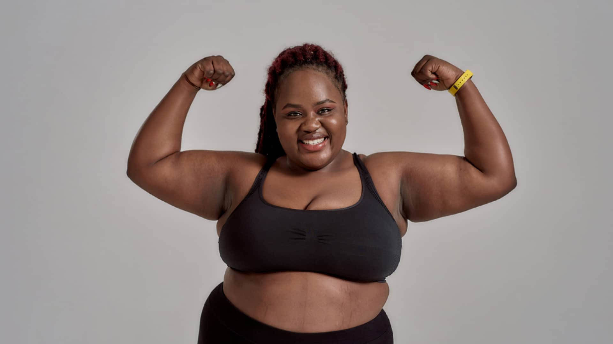
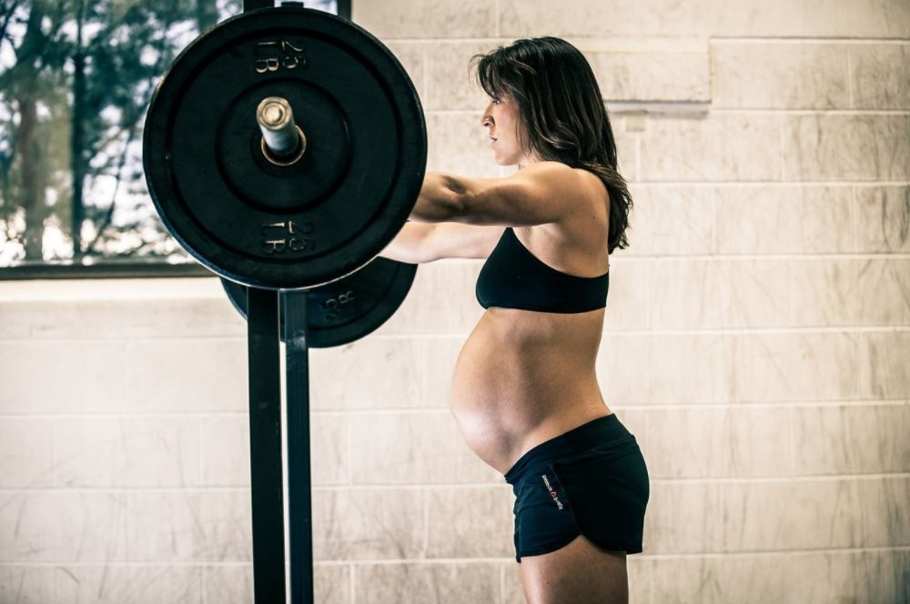
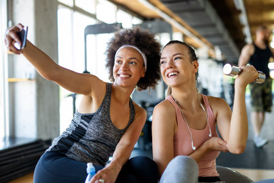
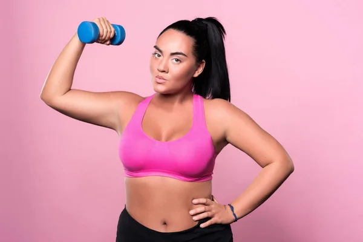
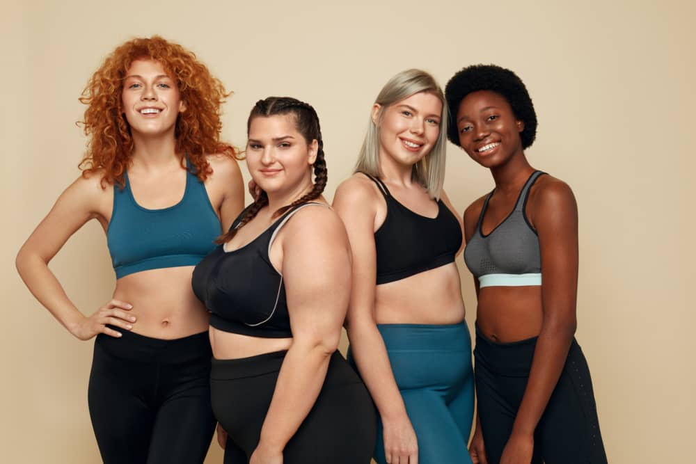
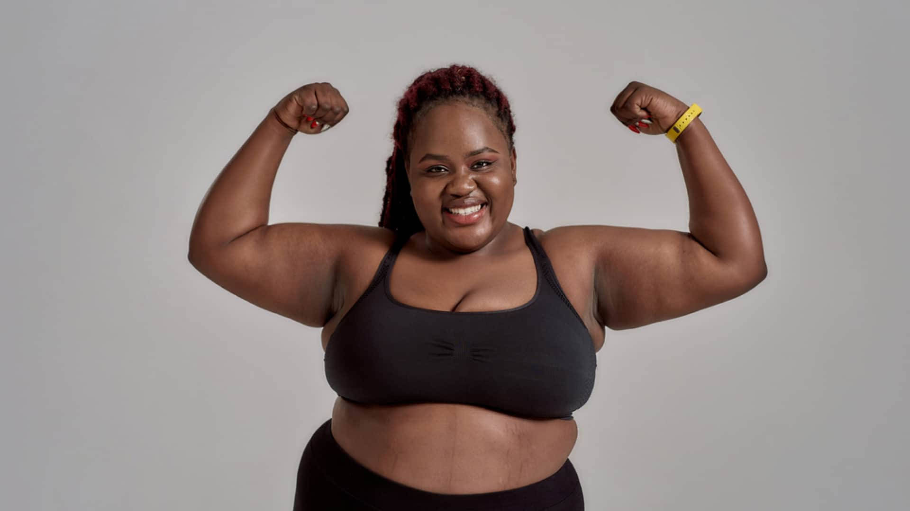
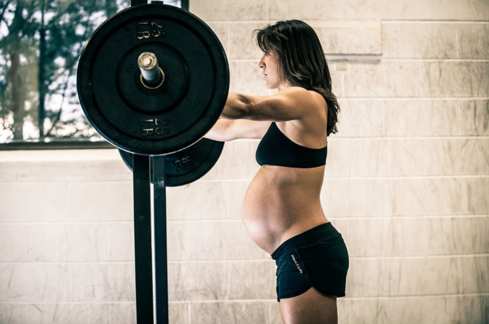

Sobre Nosotras
Somos un grupo de mujeres apasionadas por el fitness.
Decidimos crear este sitio porque notamos que el mundo del entrenamiento femenino
está lleno de mitos, consejos contradictorios y rutinas que no tienen en cuenta las verdaderas
necesidades de las mujeres. Durante años se repitió la idea de que entrenar ‘como mujer’ era
sinónimo de ejercicios suaves o limitados, cuando en realidad las mujeres podemos y
debemos entrenar con fuerza, técnica y confianza. Nuestro enfoque es brindar información
clara, accesible y respaldada, para que cada mujer pueda diseñar un entrenamiento que
respete su cuerpo, sus objetivos y sus tiempos. Queremos ser un espacio donde encuentres
inspiración, recursos prácticos y herramientas reales que te ayuden a crecer en tu camino
fitness sin caer en falsas promesas.
 








